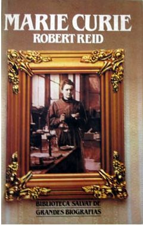

Marie Curie
Reseña por Jorge I. Zuluaga

Ver reseña en GoodReads (necesita cuenta)
Me siento afortunado, sin embargo, al saber que la primera biografía que abordo con seriedad sobre esta heroína histórica de la ciencia, sea también la maravillosa biografía escrita por Robert Reid.
Soy medianamente aficionado a leer biografías (e historia de la ciencia en general) y creo que puedo decir sin equivocarme (al menos en mi juicio personal) que esta es una de las más emocionantes biografías que he leído sobre cualquier personaje de la ciencia.
No solo la vida de Maria Sklodowska (me he propuesto desde hace rato usar su nombre y apellido polacos originales en un acto de rebeldía contra la cultura patriarcal en la que vivió y también contra la rancia preeminencia de ciertas lenguas europeas, aunque debo reconocer, después de leer esta biografía que la gran Mme. Curie nunca aprobaría que modificaran el nombre que termino identificándola hasta la tumba) estuvo marcada por eventos que fácilmente darían para múltiples novelas (en realidad su vida ya ha sido llevada al cine en varias ocasiones). También la forma en la que son narrados los hechos por Robert Reid, te transportan como en una obra de ficción, a los lugares y los eventos que ocurrieron a lo largo de la vida de la "Patrona".
La biografía es absorbente. La vida de Maria Sklodowska fue admirable.
Dos cosas significativas me llamaron la atención de la vida de la Doctora Sklodowska.
Primero, haber logrado convertirse en un mujer poderosa en un tiempo de hombres dominantes: llego a ser la primera profesora de física de la Sorbona, obtuvo dos premios Nobel de ciencia (física y química como ningún hombre y ninguna mujer); fue la primera en ofrecer la cátedra de física experimental a estudiantes femeninas; fundó y dirigió una escuela nueva para algunos niños en Francia (no duró mucho pero seguro marco la vida de esos niños); fundó y dirigió, con ayuda de su hija adolescente (Iréne Curie, otra grande) y con tenacidad el equipo de radiología que atendió y ayudó a curar a 1 millón de combatientes en la gran guerra; fue la primera verdadera y muy respetada "diva de la ciencia", incluso antes que el mismísimo Albert Einstein.
Segundo, su fortaleza física y mental a pesar de sus evidentes debilidades y el abuso al que sometió su cuerpo durante casi toda su vida. Según estimaciones del mismo Robert Reid, en sus investigaciones experimentales, en especial, en el agobiante trabajo de purificar el elemento radio que descubriría con su esposo Pierre Curie, Maria estuvo expuesta (incluso durante el embarazo de su segunda hija Eve) a niveles de radiación intolerables por cualquiera (1 REM/semana que es el equivalente a exponerse cada día al equivalente a casi 2 siglos de radiación ambiental). Aún así, su hija nació sana y ella alcanzo a vivir 30 años más después de ese intenso período en el que hizo los descubrimientos por los que se aseguro un justo lugar en la historia de la ciencia.
En fin. Esta biografía ha hecho definitivamente que replantee mi escala de ídolos intelectuales y humanos: Maria Sklodowska ahora ocupa un lugar preeminente entre los científicos que más admiró y no hay duda que hablaré mucho más de su vida y las enseñanzas que me dejo a mis estudiantes, hombres y mujeres.
¡Lean la biografía!